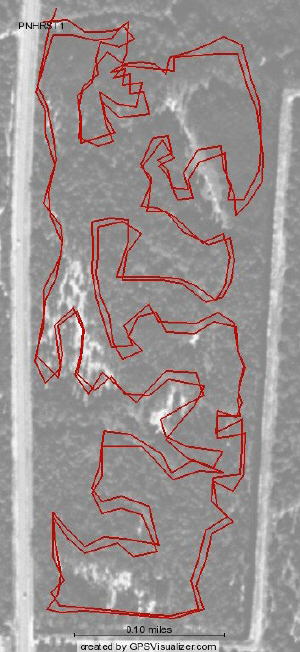

Here is a nice little neighborhood park. The Trailhead is marked on the map at the left. If you need a car to get there, official parking is at the Okeeheelee Park. I like to park near the tennis courts. There is water there, and it is a nice warm-up to pedal over to the trails. Some people park next door to the trails at Freedom Park. |
Think of the map as a Rorschach test. I see alligator teeth, a wrench, and Sanskrit characters. What do you see?
The trails are in great shape, thanks to the hard work of this group. |
 |